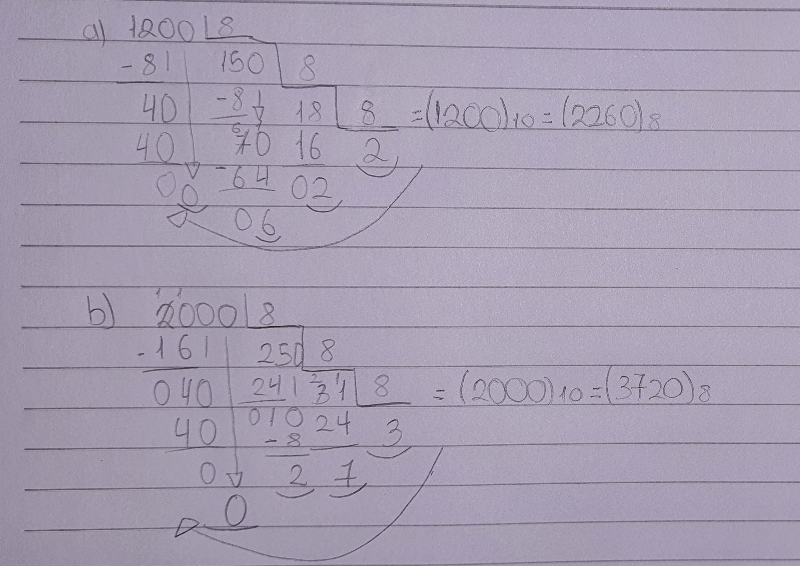

Números Octais
O que são?
Os numeros octais são um sistema numérico constituido por 7 algarismos, sendo eles:
0,1,2,3,4,5,6 e 7
Conversões:
Para utilizarmos as conversões é exatamente da mesma forma dos sistemas anteriores, divisão e potenciação. O exemplo abaixo irá mostrar como converter da base 10 para a base 8, e da base 8 para a base 2 (binária).
Base 10 para a base 8:
A divisão sempre será por 8, e você deve juntar o quociente e o resto de trás para frente, veja no exemplo abaixo:

Base 2 para a base 8:
Para calcular um número binário (base 2) para a base 8, é só somar, a cada 3 digitos binários resulta em um octal. Vizualize na tabela
| Decimais |
Octais |
Binários |
| 0 |
0 |
000 |
| 1 |
1 |
001 |
| 2 |
2 |
010 |
| 3 |
3 |
011 |
| 4 |
4 |
100 |
| 5 |
5 |
101 |
| 6 |
6 |
110 |
| 7 |
7 |
111 |
| 8 |
10 |
1000 |
| 9 |
11 |
1001 |
| 10 |
12 |
1010 |
O número binário 101100 (base 2), seria 54 na base 8.
O número binário 111111 (base 2), seria o 77 na base 8.
Base 8 para a base 2:
Para calcular um número octal (base 8),é o mesmo jeito que a conversão anterior, mas você deve inverter. A cada 1 dígito octal resulta em 3 binários. Essa conversão fica muito mais fácil com uma tabela.
O número octal 264 (base 8), resultaria no seguinte numero binário: 10110100
Outro exemplo, o número octal 504, resultaria em 101000100 binário
Voltar